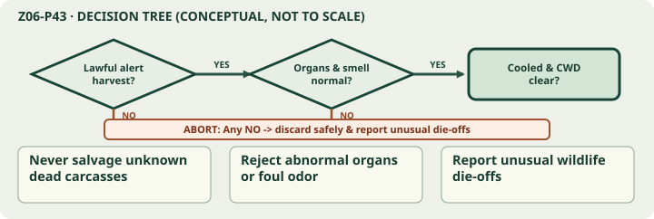

Z06-P43 · Hunting and fishing · New manuscript
Discarding Sick, Found-Dead or Compromised Wild Meat
Enforce clear rejection rules for roadkill, found-dead carcasses, abnormal organs, and chemically exposed wildlife.
When it applies · All field encounters with dead or abnormal animals.
Equipment · None—leave untouched and notify wildlife authorities when appropriate.

Actions
- Never consume found-dead wildlife or unverified carcasses because time of death, poison/rodenticide ingestion, anthrax/tularemia/rabies, and bacterial spoilage cannot be ruled out.[H09, H11, H17]
- Discard any lawfully harvested animal showing widespread pus abscesses, abnormal liver spots, emaciation, unusual neurological behavior, or foul odor, and wash tools/hands thoroughly.[H08, H11, H17]
- Report unusual clusters of dead birds, fish kills, or visibly sick deer/carnivores to Minnesota DNR wildlife health authorities without touching the carcasses.[H08, H15]
Failure recognition · Salvaging an unverified dead animal or trimming around systemic infection exposes people to lethal toxins, prions, and severe zoonoses.[H09, H11, H17]
Verify · Zero found-dead or visibly diseased carcasses enter the food chain, and unusual die-offs are reported cleanly to DNR.[H08, H15]
Stop or change course · Stop immediately and contact DNR wildlife authorities if multiple dead animals or neurologic sick wildlife are observed.[H08, H15]
Evidence and editorial notes
- H08 · Minnesota DNR · Chronic Wasting Disease (CWD) in Minnesota Deer (Current web edition)
- Section: Chronic Wasting Disease surveillance zones and carcass rules · Conditions: Harvesting cervids in Minnesota CWD management/control zones
Support: DNR designates CWD zones with mandatory sampling, carcass movement restrictions, and proper disposal rules.
Limitations: Infected deer can appear completely healthy; check current zone maps and test before consuming venison from affected areas. · Conflicting evidence: None noted.
Editorial note: Core Z06 CWD regulation and safety rule. · Specialist reviewer: Wildlife veterinarian and DNR reviewer
Primary source · checked 2026-11-25 - H09 · CDC · About Chronic Wasting Disease (CWD) Hunter Precautions (2024)
- Section: CDC CWD precautions for hunters and field dressing · Conditions: Field dressing and consuming venison from CWD-affected areas
Support: CDC advises wearing latex or rubber gloves, minimizing handling of brain and spinal tissues, testing harvested deer from CWD areas, and not eating meat from CWD-positive animals.
Limitations: Standard cooking temperatures do not destroy prions; avoid sawing through bone or spinal cord. · Conflicting evidence: None noted.
Editorial note: Reinforces Z06 prion hygiene boundary. · Specialist reviewer: Infectious-disease and wildlife veterinarian
Primary source · checked 2026-11-25 - H11 · CDC · About Tularemia and Wild Rabbit / Game Handling Precautions (2024)
- Section: Tularemia precautions with wild rabbits, hares, and rodents · Conditions: Field handling of small game and carcasses
Support: Wear impervious gloves when handling wild rabbits/rodents, avoid sick or sluggish animals, and cook meat thoroughly; bacteria can enter through skin breaks or aerosols.
Limitations: Do not handle found-dead wildlife; seek medical evaluation promptly for fever or skin ulcers after exposure. · Conflicting evidence: None noted.
Editorial note: Critical Z06 small-game zoonosis safety gate. · Specialist reviewer: Infectious-disease specialist
Primary source · checked 2026-11-25 - H15 · Minnesota DNR · Turn In Poachers (TIP) and Conservation Officer Reporting (Current web edition)
- Section: Turn In Poachers (TIP) and wildlife incident reporting · Conditions: Suspected wildlife violations, injured game, or unsafe incidents
Support: Observe from a safe distance, record location, time, descriptions, and license plates without confronting suspects, and report to MN DNR TIP or Conservation Officers.
Limitations: Do not pursue armed or hostile individuals or disturb physical evidence. · Conflicting evidence: None noted.
Editorial note: Defines Z06/Z07 non-confrontational incident reporting. · Specialist reviewer: Conservation enforcement reviewer
Primary source · checked 2026-11-25 - H17 · Minnesota DNR · White-Tailed Deer Hunting and Management in Minnesota (Current web edition)
- Section: Big-game seasonal ecology and field-hygiene cooling · Conditions: White-tailed deer habitat, rut/winter yarding, and meat spoilage limits
Support: Rapid cooling below 40 F, keeping carcasses clean of gut contents and dirt, and protecting meat from insects prevent bacterial spoilage.
Limitations: Warm autumn weather accelerates spoilage within hours; abandon harvest if safe transport and cooling cannot be achieved. · Conflicting evidence: None noted.
Editorial note: Connects Z06 harvest to cold-chain food safety. · Specialist reviewer: Wildlife manager and food-safety specialist
Primary source · checked 2026-11-25
Source lineage · New manuscript (Z06 P17 food contamination) · Classification · New manuscript.